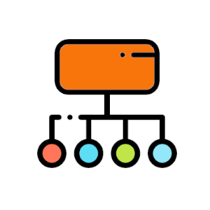
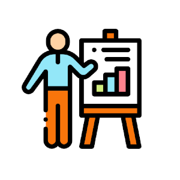
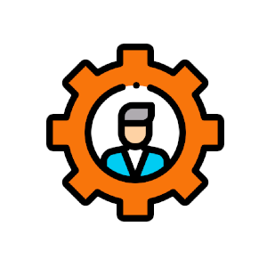
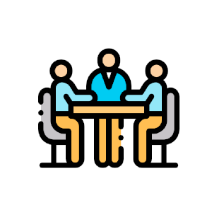
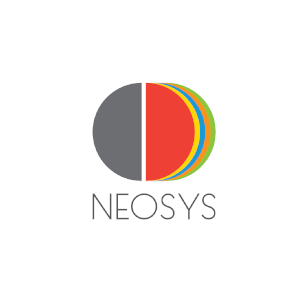

A felvételt nyert, új tagok számára az első félévben nagyszerű szakmai lehetőséget biztosítunk az alapozó kurzusunk keretében. Ezen alkalmak során különböző előadásokat hallhatnak tapasztalt szakemberektől. Ezek a főként gyakorlati tudást közvetítő alkalmak mindig nagyon jó hangulatban telnek, ahol az előadók segítőkészek és közvetlenek. A tematika emberi erőforrás menedzsment és szervezetpszichológia témák köré szerveződik. Az alkalmak általában kétszer másfél órásak. A kurzus az első félévesek számára kötelező.
Bevezetés a HR-be
Employer Branding
Toborzás - Kiválasztás - AC
Szervezeti integráció
Motiváció és megtartás
Karriertervezés
Munkapszichológia
Szervezetfejlesztés
Prezentációs készségfejlesztés
Szupervízió

Szakmai csoportok
A szakmai csoportok élükön az alelnökökkel a szervezet operatív működését biztosítják. A tagok minden évben választanak egy csoportot ahol munkájukkal hozzájárulnak a szervezet értékteremtéséhez. Ezt négy területen tehetik meg:
Rendezvényszervezés
Tagjai a külső és belső rendezvények megszervezéséért, lebonyolításáért felelősek, hozzájuk tartoznak a nyilvános előadások, szakmai viták és belső csapatépítők, táborok és a zárófogadás szervezése.
Marketing
Tagjai a szervezet népszerűsítéséért és kommunikációjáért felelősek, hozzájuk tartozik a toborzási kampány, plakátok és kreatív anyagok szerkesztése, kiülések és infóest megszervezése, social media felületek kezelése, weboldal szerkesztése.
Szakmai működés
Tagjai a kurzusok, tréningek megszervezéséért és utókövetéséért felelősek, illetve ők tartják a kapcsolatot a szakmai támogatókkal, előadókkal.
HR
Ők a kiválasztás folyamatában vállalnak jelentős szerepet, a felvételi feladatsor összeállítása, AC-k leszervezése, valamint az aktivitási pontrendszer nyomon követése, tagok díjazása, értékelése is az ő feladatuk.

Tréningek
Minden félévben 6 alkalom keretében mélyülhetnek el a tagok HR, szervezet- és munkapszichológia témában tartott tréningek során. Cél egy gyakorlatias, interaktív, közvetlen hangulatú eset vagy feladatmegoldás, illetve soft skillek felszínre hozása és fejlesztése. Hosszabb-rövidebb alkalmak keretében a szakmai tudásbővítés és lényeges készségfejlesztés kerül előtérbe gyakorlott coachok, vezetők koordinálásával. Eddigi témák:
Konfliktuskezelés
Self-Branding
Kommunikáció
Prezentációs skillek
Mindfullness
CV írás
Marketing
Munkajog
Szervezetfejlesztés
Stratégiaalkotás
Design Thinking

Munkacsoportok
Az alapozó kurzushoz hasonlóan épülnek fel a munkacsoportok, annyi különbséggel, hogy itt a kurzus témája sokkal fókuszáltabb, specifikusabb és gyakorlatiasabb, illetve jellemzően 4-5 fős csoportokban zajlik a tanulás szakemberek vezetésével. A kurzus során gyakori, hogy kézzelfogható végterméke lesz a munkának, amit a szervezet a jövőben hasznosítani tud. Az első félév után ajánljuk tagjainknak a részvételt. Eddigi témák:
Generáció-menedzsment
Kiválasztási módszerek
Szupervízió és Coaching
Employer Branding
Munkahelyi stressz
HR stratégia
Szenvedélyes munkavégzés
Menedzsment

Business Projektek
Ennek keretében vállalatokkal együttműködve dolgozunk egy valós probléma megoldásán, leginkább a tapasztaltabb tagjaink vesznek részt az ilyen projektekben kis csoportokban, miután már teljesítették az alapozó kurzust. Kiváló lehetőség, hogy kipróbáljuk magunkat egyfajta tanácsadó szerepben, ezáltal jobban megismerjük egy vállalat gyakorlati problémáit és ezek megoldásain dolgozzunk.
Korábbi együttműködő partnereink:
Kelly Services

Neosys Coaching
Rendezvények
Amellett, hogy színvonalas szakmai képzést biztosítunk a tagjaink számára, az egyetemi hallgatók felé is igyekszünk értéket teremteni a nyilvános rendezvényeinken keresztül. Célunk, hogy az egyetemi képzést kiegészítsük ismert előadóktól, vállalati szakemberektől származó tudással, amin keresztül olyan témakörökbe is gyakorlati bepillantást nyerhetnek a hallgatók, amikre az órák alatt nincs lehetőség. Ide tartoznak az előadások, szakmai viták és workshopok.
Kenyeres András, Business coach, tréner, a Budapesti Metropolitan Egyetem vendégelőadója, és a Magyar Vízilabda Szövetség férfi válogatottjának mentál trénere.
Pajor Mariann, belső kommunikációs vezető - Egis, szakmai vezető - OHE
Szűts Ildikó - az Országos Humánmenedzsment Egyesület elnöke,
Kuruc Péter - ügyvezető igazgató, Hálózati támogatás vezetője, K&H Bank,
Megyeri Mirtill - a Zyntern társalapítója, Unifications Manager,
Dancza Dániel - Business Unit Head, Egis,
Kálmán Márta, szupervizor, coach
Megyeri Mirtill, Zyntern társalapítója
Tóth Györgyi, a Deloitte Senior HR Business Partnere
Kővágó Pál, pszichológus, művészetterapeuta
Partnerünk: A Három királyfi, Három királylány Mozgalom
Újvári Enikő, aki a Balansz Intézet vezetője, a Családbarát Vállalat pályázat zsűri elnöke
Révész Bálint, a K&H bank HR osztályvezetője
{kind=link}
{kind=link}
{kind=link}
{kind=link}
{kind=link}
{kind=link}